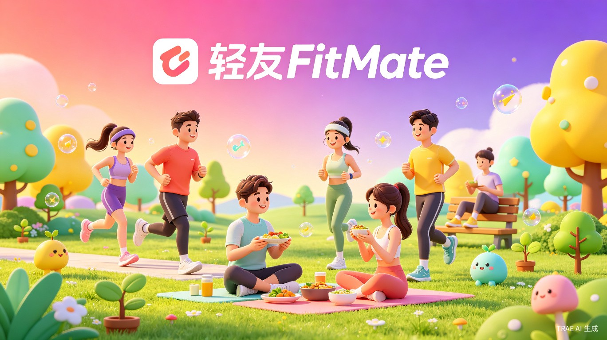
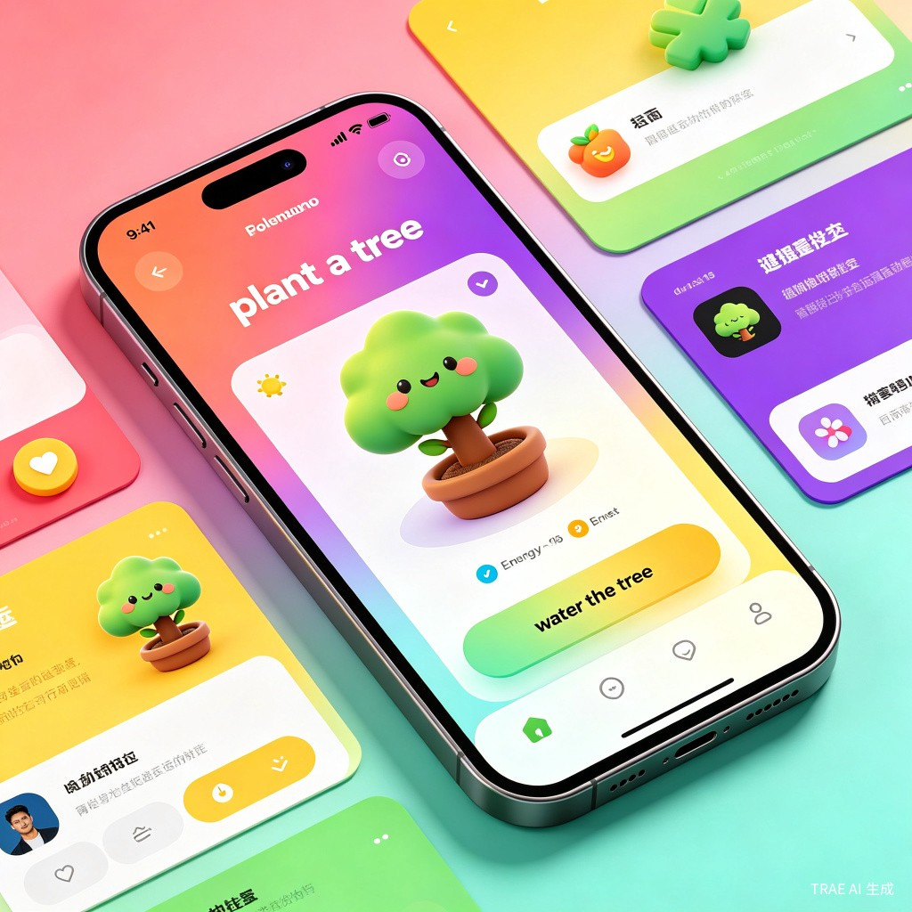
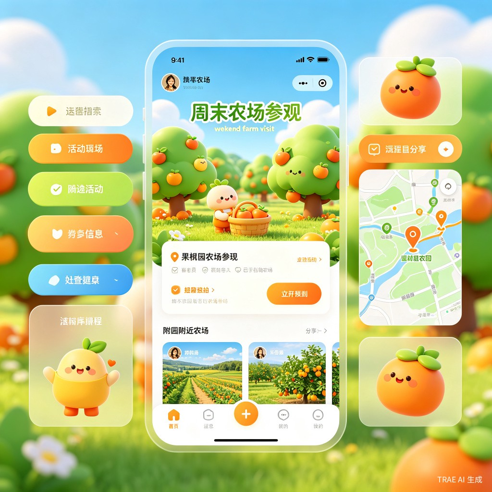
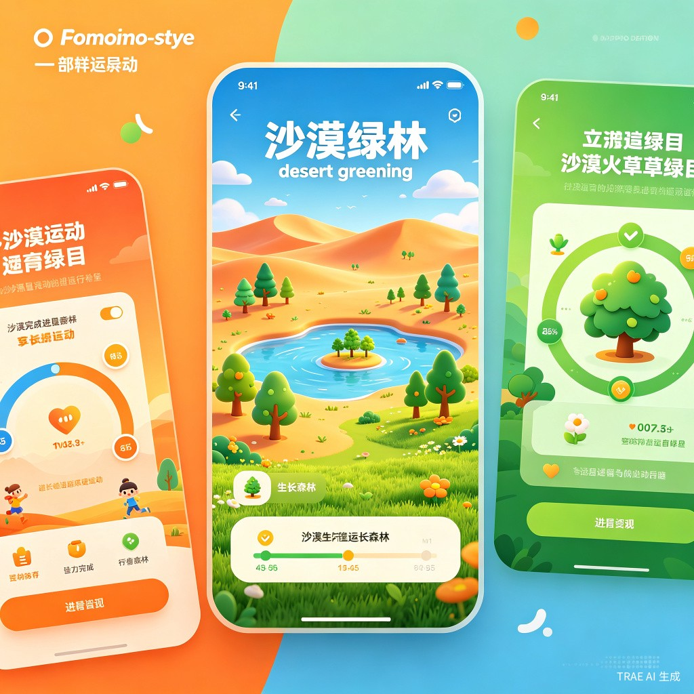

01 创意概述
产品名称：轻友FitMate — 你的焕新搭子
轻友FitMate是一款融合健康社交 + 习惯养成 + 公益种树的AI驱动型移动应用。用户通过AI智能匹配找到"焕新搭子"，在互相监督和鼓励中养成健康习惯；每一次打卡、每一步运动都会转化为"轻友能量"，用于在APP中种下虚拟树苗——当能量积累到一定程度，平台将在现实世界为用户种下一棵真树，或认养一棵城市近郊采摘园的果树。
一句话概括：一个"以健康换绿意"的社交平台 —— 你的每一次自律，都在为世界增添一抹绿色。
想解决什么问题
减肥和习惯养成是孤独的战斗，独自成功率仅15%，有伙伴则可达70-85%[3]。但找到合适的搭子很难，传统APP缺乏深度绑定机制。同时，年轻人渴望参与公益却缺少低门槛渠道——轻友FitMate将三者融合：用社交解决孤独，用机制解决坚持，用公益赋予意义。
产品形态
移动端APP，采用多巴胺风格UI——高饱和度渐变色彩、圆润卡片、活泼插画，贴近字节跳动旗下产品（抖音、剪映）的简洁设计语言。核心模块：AI匹配引擎、习惯契约系统、轻友能量种树、助农果园、周末焕新行。
02 市场机会
为什么"运动+公益"是蓝海
蚂蚁森林已证明：将日常行为与公益绑定，可以创造惊人的用户粘性——7.5亿用户、6.19亿棵树[14]。但蚂蚁森林的"能量"来源偏被动（支付、出行），缺乏主动健康行为的激励。Keep的"卡路里兑换公益"模式[15]验证了运动与公益结合的可行性，但缺少社交裂变和可视化种树体验。
轻友FitMate的独特定位：将蚂蚁森林的"种树可视化" + Keep的"运动公益" + 搭子社交的"互相监督"三者融合，创造全新的"健康换绿意"品类。
03 核心功能设计
功能一：AI智能搭子匹配
基于健康目标、作息习惯、性格特征、地理位置进行多维度匹配。支持"同性搭子"（电子闺蜜/兄弟）和"异性搭子"两种模式。AI根据行为数据动态调整推荐权重。
功能二：焕新打卡与习惯契约
每日健康打卡（运动、饮食、睡眠），搭子互相监督。核心创新"习惯契约"——用户与搭子签订对赌协议（如30天戒糖、早睡打卡），违约有积分惩罚，利用"不拖累队友"心理强化执行[12]。
功能三：轻友能量 — 种树系统（核心创新）

借鉴蚂蚁森林的能量机制[14]，但将能量来源从"被动消费行为"改为"主动健康行为"：
| 能量来源 | 具体行为 | 能量值 |
|---|---|---|
| 步行 | 每1000步 | +5g |
| 运动打卡 | 完成一次运动记录 | +20g |
| 每日夸夸 | 给搭子发送鼓励消息 | +5g |
| 习惯契约完成 | 达成契约目标 | +50g |
| 公开承诺 | 发布目标宣言 | +10g |
| 内容分享 | 发布蜕变日记 | +15g |
| 邀请好友 | 成功邀请新用户 | +30g |
功能四：合种一片林 — 社交种树
参考蚂蚁森林"合种"机制[14]，搭子可以共同浇灌一棵树苗，能量共同累积。树苗成长阶段：种子→萌芽→幼苗→小树→大树。达成目标后，平台在对应公益项目中以两人名义种下一棵真树，生成带唯一编号的电子证书。
三种种树场景：
1. 西北防风固沙林 — 在阿拉善/腾格里沙漠种植梭梭树、樟子松，用户可查看卫星对比图和树苗实景照片
2. 城市近郊采摘园 — 认养果树（苹果、葡萄、草莓），成熟后可前往采摘或邮寄到家
3. 亚沙运动纪念林 — 参与亚沙挑战赛的选手共同种下"亚沙纪念林"，每棵树标注参赛者姓名
功能五：助农果园 — 认养+采摘

对接城市近郊采摘园和贫困山村果园，用户可以用能量认养果树，或通过积分兑换采摘体验。参考"共享菜园"模式[16]，提供：
-
远程浇水
用轻友能量为认养的果树"浇水"，加速果实成熟进度
-
生长直播
高清摄像头实时展示果树生长，从开花到结果全程可视
-
采摘预约
果实成熟后预约线下采摘，或与搭子组队前往
-
助农故事
每棵果树附带农户故事，让用户了解背后的乡村与农民
功能六：周末焕新行 — 线下活动
积分兑换或报名线下活动：城市周边爬山、徒步、斯巴达勇士赛体验营、助农产地探访、亚沙挑战赛等。形成"线上匹配→线下见面→共同经历→关系深化"闭环。

功能七：亚沙挑战赛联动
与亚太地区商学院沙漠挑战赛（亚沙赛）合作[17]，为参赛选手提供：备赛训练计划、队友匹配、能量加倍奖励。完赛选手共同种下"亚沙纪念林"，每棵树标注参赛者姓名和完赛时间，形成持久的情感纽带。
04 搭子文化与分群体互助激励体系
轻友FitMate的核心不是"工具"，而是"人"。合种一棵树、浇灌一片林、认养一棵果树——这些功能的设计初衷都是为了让搭子之间的关系更有温度、更有回忆、更有奔现的理由。我们针对不同群体，设计了风格迥异的搭子互助文化，让每一种关系都能找到属于自己的"仪式感"。
一、四大群体的搭子文化定位
都市白领女性 — 「精致闺蜜圈」
文化内核："一起变美，一起变强"。电子闺蜜式的深度陪伴，强调仪式感、审美共鸣和情绪价值。打卡不是任务，是"给闺蜜报备今日状态"。
健身新手男性 — 「燃脂兄弟连」
文化内核："是兄弟就一起瘦"。竞技感+兄弟义气，排行榜、段位、PK赛是核心语言。异性搭子挑战增加"为TA而战"的动力。
产后恢复妈妈 — 「妈妈互助会」
文化内核："宝宝睡了我们聊"。深夜时段的专属陪伴，话题从减肥延伸到育儿、婚姻、自我成长。搭子之间是"战友"更是"知己"。
大学生群体 — 「校园焕新社」
文化内核："宿舍一起卷，操场一起嗨"。宿舍组队、班级PK、戒奶茶挑战，把减肥变成校园社交新方式。天然适合社交裂变。
二、分群体专属互动机制
| 群体 | 专属机制 | 互动形式 | 奔现场景 |
|---|---|---|---|
| 都市白领 | 「早安闺蜜卡」 「周末brunch约」 「办公室轻食挑战」 |
每日互发精致早餐照片 预约周末健康餐厅 团队打卡赢下午茶基金 |
周末brunch探店 瑜伽课/普拉提体验 城市周边温泉度假 |
| 健身男性 | 「燃脂PK场」 「为TA而战」 「兄弟段位赛」 |
每日运动数据PK 异性搭子共同目标双倍积分 青铜→王者段位晋升 |
健身房约练 斯巴达体验营 篮球/羽毛球局 |
| 产后妈妈 | 「宝宝睡眠同步」 「深夜树洞」 「妈妈轻食食谱」 |
宝宝入睡后妈妈打卡 22:00-24:00专属聊天时段 分享低卡辅食做法 |
亲子采摘活动 妈妈瑜伽课 社区妈妈聚会 |
| 大学生 | 「宿舍战队」 「戒奶茶挑战」 「校园焕新季」 |
全宿舍打卡赢聚餐基金 30天不喝奶茶赢大奖 班级/院系排行榜 |
校园夜跑团 周末爬山局 食堂健康餐打卡 |
三、回忆感构建 — 让每一对搭子都有"专属记忆"
合种一棵树不只是公益，更是"两个人的共同作品"。我们设计了完整的"回忆感"体系，让搭子关系从"陌生人"逐步升级为"有共同记忆的朋友"：
「我们的树」成长日记
每一对合种的搭子拥有专属的树苗成长页面：
—— Day 1：「种子」—— "2026年6月16日，小美和小李一起埋下了这颗希望的种子"
—— Day 30：「萌芽」—— "你们已共同浇灌了1200g能量，树苗发出了第一片嫩叶"
—— Day 90：「小树」—— "恭喜！你们的树已经长到30cm高了，再坚持一下就能种下真树啦！"
—— Day 180：「大树」—— "你们的梭梭树已在阿拉善扎根！GPS坐标：38.85°N, 105.72°E"
「我们的果园」
认养果树后，搭子共同远程浇水、施肥。果实成熟后，可以选择一起去采摘，或各自收到一半果实——"你吃的那一半，是我浇的水"。
「我们的契约」
每完成一个习惯契约，生成一张「契约证书」——"小美和小李，于2026年6月成功完成30天戒糖挑战"。可分享到朋友圈。
「我们的足迹」
记录搭子一起参加的所有线下活动：第一次爬山、第一次采摘、第一次斯巴达。生成「共同足迹地图」，标注每一次见面的地点。
「我们的年度」
每年年底生成「轻友年度报告」——"这一年，你们互相鼓励了328次，共同种下了2棵树，一起参加了5次线下活动"。
四、奔现路径设计 — 从线上到线下的自然过渡
奔现不是目的，而是关系自然深化的结果。我们设计了从"线上文字"到"线下见面"的渐进式路径，每一步都有平台提供的"安全感和仪式感"：
| 阶段 | 线上互动 | 平台支持 | 奔现契机 |
|---|---|---|---|
| 初识期 （1-7天） |
文字聊天、打卡互评 每日夸夸、能量互赠 |
AI推荐破冰话题 「今日话题」每日推送 |
—— |
| 磨合期 （1-4周） |
语音消息、照片分享 合种树苗、签订契约 |
「契约见证」仪式 树苗成长动画共享 |
平台推送附近活动 "你们都在XX区，本周有爬山活动" |
| 信任期 （1-3月） |
视频通话、位置共享 蜕变日记深度分享 |
「安全奔现指南」 「活动保险」赠送 |
报名平台组织的周末活动 采摘/爬山/斯巴达体验营 |
| 深化期 （3月+） |
共同规划长期目标 邀请加入对方社交圈 |
「长期搭子认证」徽章 「年度好友」评选 |
自发组织线下活动 亚沙挑战赛组队 助农产地探访 |
「安全奔现」机制：
1. 实名认证 — 参加线下活动需完成实名认证，平台提供身份核验
2. 活动保险 — 平台为所有官方活动购买意外险，降低参与顾虑
3. 紧急联系人 — 用户可设置紧急联系人，活动前自动通知
4. 一键求助 — 活动现场提供一键求助按钮，直连平台客服
5. 评价反馈 — 活动结束后双方互评，建立信用体系
五、搭子关系升级体系 — 从"临时搭子"到"一生轻友"
搭子关系不是一成不变的，我们设计了完整的关系升级路径，让用户感受到关系的成长和沉淀：
「临时搭子」
匹配成功后的7天试用期。双方互相了解，决定是否继续。可随时解除，无惩罚。
「固定搭子」
连续打卡7天后自动升级。解锁合种树苗、签订契约等功能。解除需提前3天通知。
「默契搭子」
连续30天打卡+完成3个契约。解锁专属聊天背景、双人头像框、优先匹配权。
「一生轻友」
连续90天打卡+共同种下一棵真树。获得「一生轻友」认证徽章，永久保留聊天记录和共同回忆。
「一生轻友」专属权益：
—— 每年免费获得一棵以两人名义种下的真树
—— 专属「轻友护照」，记录所有共同公益贡献
—— 优先受邀参加平台年度「轻友盛典」线下聚会
—— 解锁「我们的故事」长图文，可生成精美纪念册
05 焕新积分与习惯养成系统
设计"强约束+正向激励+社交监督"三位一体系统。核心原理：公开承诺 + 持续反馈 + 社交压力是养成习惯的最有效组合。
习惯契约 — 对赌机制
戒糖挑战
30天不碰含糖饮料。违约扣100能量，连续3次契约解除+公示"契约失败"。
早睡打卡
每晚23:00前睡觉。一方违约双方各扣50能量，不拖累队友！
减重对赌
30天减2kg。未达成押金进"公益池"用于种树，达成返还+奖励。
运动组队
每周运动3次。一人未完成，全队本周能量减半。参考Habitica机制[12]。
公开承诺与社交监督
-
宣言墙
发布公开目标，社区可见。系统自动标注"进行中/已达成/已放弃"
-
连带责任
组队契约中一人违约全队受罚，利用同伴压力强化执行
-
失信榜
连续3天未打卡进入匿名公示，严重违约限制匹配7天
-
AI干预
连续2天未打卡，AI通知搭子主动关心，推送低门槛重启任务
06 UI设计风格 — 多巴胺 × 字节简洁
轻友FitMate的UI设计融合多巴胺风格的高饱和度色彩与字节跳动产品的简洁克制，打造既活泼又专业的视觉体验。
设计原则
高饱和渐变
主色采用珊瑚粉(#FF6B6B)到电光紫(#A855F7)的135度渐变，辅助色使用明黄、薄荷绿、天空蓝等高饱和色彩，面积控制在63%以内避免视觉疲劳[18]。
圆润卡片
卡片圆角20px，按钮圆角16px，大圆角营造亲和感。参考抖音的圆角处理，但比欧美风格更收敛。
8px网格系统
严格遵循8px基准网格，信息层级清晰。参考飞书设计规范[19]，留白充足但不空旷。
活泼插画
3D质感卡通形象（小树、水果、运动角色），表情丰富可爱。参考Zenly 5.0的强3D质感设计[18]，但不失简洁。
色彩规范
| 用途 | 色彩 | 色值 | 使用场景 |
|---|---|---|---|
| 品牌主色 | #FF6B6B → #A855F7 | Logo、主按钮、重点强调 | |
| 成功/健康 | #34D399 | 打卡成功、能量增长、完成状态 | |
| 活力/提醒 | #FBBF24 | 通知、待办、能量待收取 | |
| 天空/清新 | #38BDF8 | 辅助信息、标签、次要按钮 | |
| 温暖/果园 | #FB923C | 助农模块、采摘预约、果树相关 |
界面展示
07 产品架构
flowchart TB
subgraph 用户端
A[注册/完善资料] --> B[AI智能匹配]
B --> C[搭子互动]
C --> D[每日打卡]
D --> E[习惯契约]
E --> F[轻友能量]
F --> G[种树系统]
G --> H[合种一片林]
F --> I[助农果园]
F --> J[积分兑换]
J --> K[线下活动]
C --> L[蜕变日记]
end
subgraph AI引擎
M[用户画像模型] --> N[多维度匹配]
O[行为数据分析] --> N
N --> P[搭子推荐]
Q[健康知识库] --> R[AI健康助手]
O --> R
O --> S[流失预警]
O --> T[能量计算]
end
subgraph 公益层
U[西北防风固沙] --> V[真实种树]
W[城市采摘园] --> X[果树认养]
Y[亚沙纪念林] --> V
F --> U
F --> W
F --> Y
end
B -.-> P
C -.-> C
D -.-> O
F -.-> T
08 AI应用亮点
AI智能匹配引擎
基于健康目标、作息习惯、性格特征、地理位置多维度匹配，动态调整推荐权重，精准匹配"焕新搭子"。
AI健康助手
对话式AI助手，根据打卡数据提供个性化饮食建议、运动方案和鼓励话语，充当"24小时健康顾问"。
AI行为分析与干预
识别流失风险，自动通知搭子关心，推送低门槛重启任务。参考Forest的"种树复活"机制[13]。
AI蜕变报告
自动生成阶段性报告，包含数据可视化、进步对比、能量贡献排名、种树成就等。
09 商业模式与可行性
收入模式
| 收入来源 | 说明 | 阶段 |
|---|---|---|
| 会员订阅 | 高级匹配、专属AI顾问、双倍能量、稀有树种 | 核心收入 |
| 助农电商 | 健康农产品销售佣金、果树认养服务费 | 增长收入 |
| 线下活动 | 斯巴达体验营、采摘活动、亚沙挑战赛报名费 | 增值收入 |
| 企业CSR合作 | 企业员工健康+公益种树团建，参考蚂蚁森林2600家企业合种[14] | B端收入 |
| 品牌广告 | 健康品牌、运动品牌精准投放 | 辅助收入 |
可行性分析
- 市场
-
技术
AI匹配、能量计算、种树可视化技术成熟，借助TRAE可快速开发MVP
-
公益
与百万森林、SEE基金会等成熟公益组织合作，降低落地门槛[20]
-
风险
真实种树的成本和溯源透明度需要保障，用户隐私保护需重视
10 参赛计划
赛道选择
生活娱乐赛道（主赛道）+ 社会公益赛道（附加赛道）—— 双赛道申报，奖励可叠加[1]。产品同时覆盖"有趣有温度的生活方式"和"技术让社会更好"两大评审维度。
公益赛道契合点：
1. 西北防风固沙 — 直接参与荒漠化防治，响应"双碳"目标
2. 助农果园 — 帮助贫困山村销售健康农产品，助力乡村振兴
3. 亚沙纪念林 — 将运动精神转化为生态贡献，传递正能量
开发计划
| 阶段 | 时间 | 交付物 |
|---|---|---|
| 初赛 | 6月16日 - 7月15日 | 可交互Web Demo（匹配 + 打卡 + 能量种树 + 习惯契约） |
| 复赛 | 7月下旬 - 8月上旬 | 完整产品（增加助农果园、AI助手、线下活动报名） |
| 决赛 | 8月下旬 | 产品路演 + 现场演示 + 公益合作意向展示 |
初赛Demo核心范围
-
P0
用户注册与AI匹配：健康目标、运动偏好、搭子推荐
-
P0
轻友能量系统：打卡获取能量、种树可视化、树苗成长阶段
-
P0
习惯契约：签订契约、违约惩罚、搭子连带责任
-
P1
合种一片林：搭子共同浇灌、能量累积、成就证书
-
P1
助农果园展示：果树认养界面、生长进度、助农故事
-
P2
AI健康助手（基础版）：基于规则的饮食/运动建议
11 价值与意义
社会价值
轻友FitMate构建了"个人健康→社交陪伴→公益贡献"的正向循环。用户的每一次自律不仅让自己变得更好，还在为西北沙漠增添绿色、为乡村农户带来收入、为城市近郊创造生态采摘空间。这是一种"利己即利他"的全新公益参与模式，降低了年轻人参与公益的门槛，让公益从"额外付出"变成"日常收获"。
商业价值
通过三重机制解决减肥APP的留存难题：社交关系链绑定（搭子互相监督）、习惯契约约束（对赌机制强制履约）、公益意义驱动（种树可视化赋予长期动力）。助农电商、线下活动、企业CSR合作拓展了多元变现空间。
创新价值
轻友FitMate的创新在于将四个成功模式融合：蚂蚁森林的"种树可视化" + Keep的"运动公益" + Habitica的"团队契约" + 搭子社交的"互相监督"，创造了全新的"健康换绿意"品类。多巴胺风格UI让健康APP不再枯燥，字节简洁设计保证了专业感。AI技术贯穿匹配、陪伴、监督、干预全流程。
参赛宣言："世界很大，放手去造"——我们相信，每一次早起、每一步奔跑、每一句鼓励，都在让两个人 closer，让一棵树 taller，让这个世界 greener。轻友FitMate，你的焕新搭子，一起改变，一起种下未来。